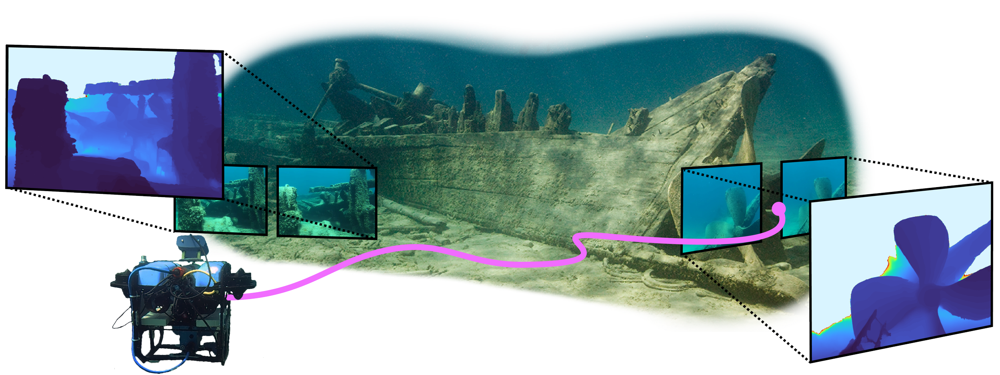
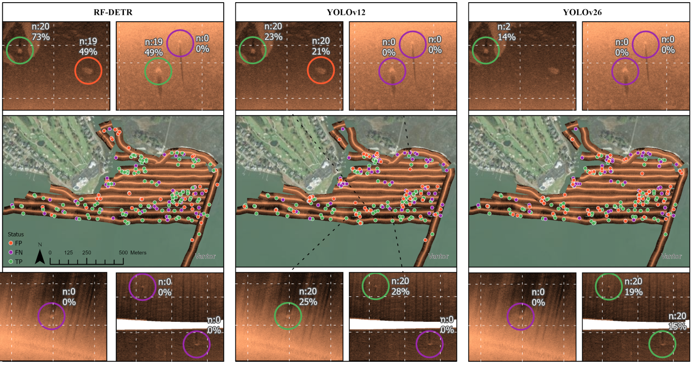
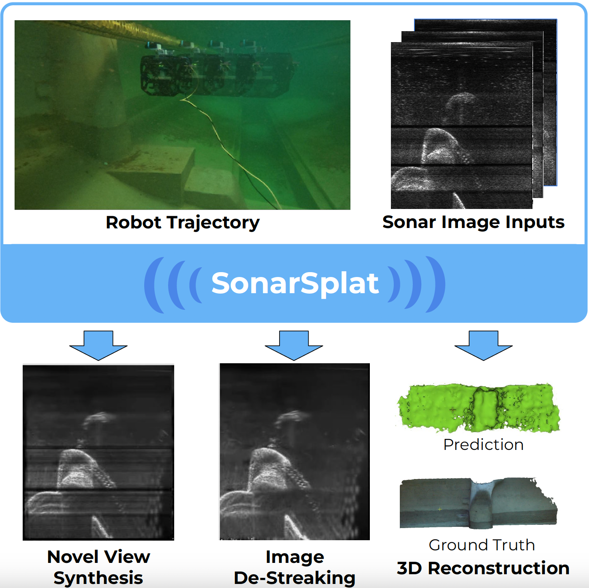
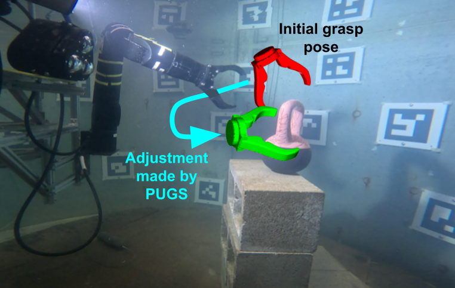

|
Onur Bagoren Merhaba! I'm a Ph.D. student at the University of Michigan, co-advised by Dr. Katie Skinner at the Field Robotics Group and Dr. Ram Vasudevan at the ROAHM Lab. I'm a J. Robert Beyster Computational Innovation Graduate Fellow. My research is on applying probabilistic learning methods for computer vision and robotics to tasks such as state estimation, mapping, and decision-making in challenging environments. |

|
News |
|
|
ResearchI'm broadly interested in probabilistic learning for robot perception, particularly underwater. My work spans acoustic and visual sensing, SLAM, neural implicit representations, and uncertainty-aware decision-making. |
|
 |
SurfSLAM: Sim-to-Real Underwater Stereo Reconstruction For Real-Time SLAM
Onur Bagoren*, Seth Isaacson*, Sacchin Sundar, Yung-Ching Sun, Anja Sheppard, Haoyu Ma, Abrar Shariff, Ram Vasudevan, Katherine A. Skinner In Submission A novel real-time SLAM method for underwater navigation. |
|
 |
GhostVision: Democratizing Derelict Gear Detection Using Low-Cost Sonar and Artificial Intelligence
Cameron S. Bodine, Kleio Baxevani, Naveed Abbasi, Jared Wierzbicki, Ophelia Christoph, Catherine Hughes, Onur Bagoren, Olivia Hines, Julia Greco, Arthur Trembanis Journal of Marine Science and Engineering, 2026 A low-cost sonar and AI pipeline for detecting derelict fishing gear underwater, making automated ghost gear surveys accessible without specialized equipment. |
|
 |
SonarSplat: Novel View Synthesis of Imaging Sonar via Gaussian Splatting
Advaith Sethuraman, Max Rucker, Onur Bagoren, Pou-Chun Kung, Nibarkavi N.B. Amutha, Katherine A. Skinner IEEE Robotics and Automation Letters (RA-L), 2025 Extending 3D Gaussian Splatting to imaging sonars to enable novel-view synthesis and 3D reconstruction from sonar images. |
|
 |
PUGS: Perceptual Uncertainty for Grasp Selection in Underwater Environments
Onur Bagoren, Marc Micatka, Katherine A. Skinner, Aaron Marburg ICRA, 2025 Modeling perceptual uncertainty over object geometry to guide grasp selection for underwater manipulation, enabling more robust grasping in visually challenging marine scenes. |

|
VAIR: Visuo-Acoustic Implicit Representations for Low-Cost, Multi-Modal Transparent Surface Reconstruction
Advaith V. Sethuraman*, Onur Bagoren*, Harikrishnan Seetharaman, Dalton Richardson, Joseph Taylor, Katherine A. Skinner ICRA, 2025 Coupling low-cost acoustic sensing with visual measurements inside a generative neural implicit representation to reconstruct transparent surfaces. |

|
OceanSim: A GPU-Accelerated Underwater Robot Perception Simulation Framework
Jingyu Song, Haoyu Ma, Onur Bagoren, Advaith Sethuraman, Yiting Zhang, Katherine A. Skinner IROS, 2025 A GPU-accelerated simulation framework providing realistic sonar, camera, and sensor rendering for developing and benchmarking underwater robot perception algorithms at scale. |

|
TURTLMap: Real-time Localization and Dense Mapping of Low-texture Underwater Environments
Jingyu Song*, Onur Bagoren*, Razan Adigani, Advaith V. Sethuraman, Katherine A. Skinner IROS, 2024 Real-time dense mapping and localization in featureless underwater environments on a low-cost UUV, combining stereo vision with probabilistic fusion. |

|
Machine Learning for Shipwreck Segmentation from Side Scan Sonar Imagery: Dataset and Benchmark
Advaith V. Sethuraman, Anja Sheppard, Onur Bagoren, Christopher Pinnow, Jamey Anderson, Timothy C. Havens, Katherine A. Skinner International Journal of Robotics Research, 2024 A dataset and benchmark of side scan sonar imagery for shipwreck segmentation, enabling systematic evaluation of ML methods for underwater archaeological and search tasks. |

|
Uncertainty-Aware Acoustic Localization and Mapping for Underwater Robots
Jingyu Song*, Onur Bagoren*, Katherine A. Skinner OCEANS, 2023 An uncertainty-aware probabilistic framework for acoustic localization and mapping that explicitly reasons about sensor noise and model uncertainty in GPS-denied underwater environments. |
| Design adapted from Jon Barron's website. |